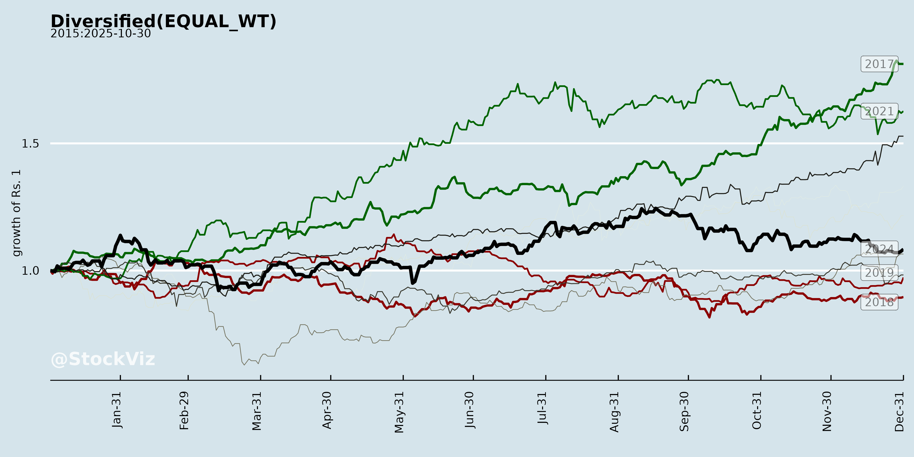
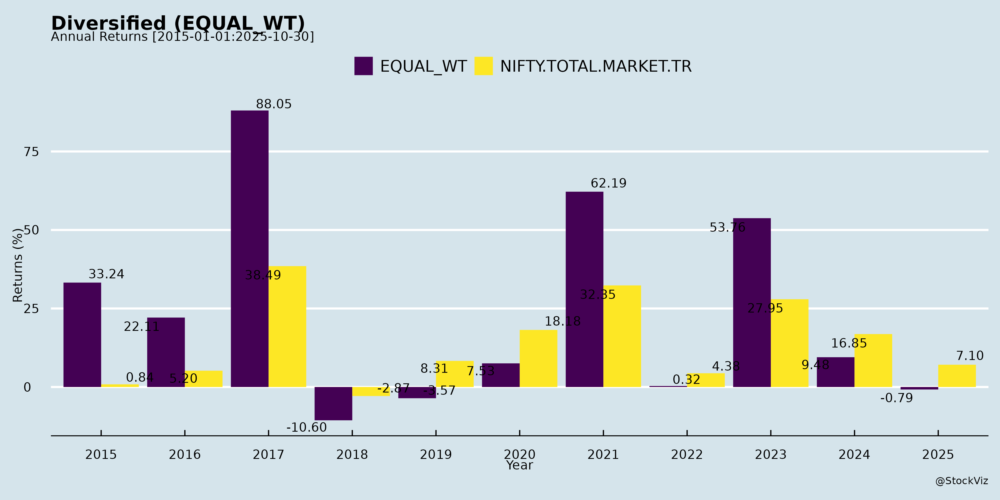
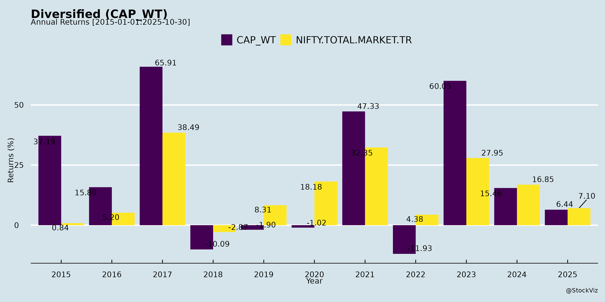
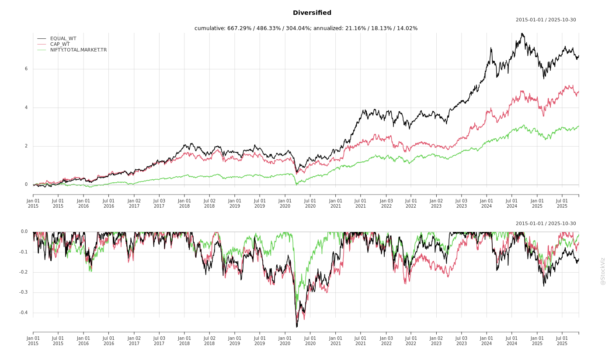
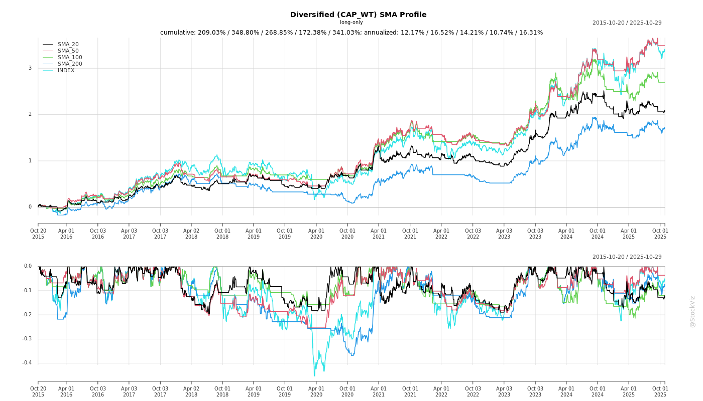
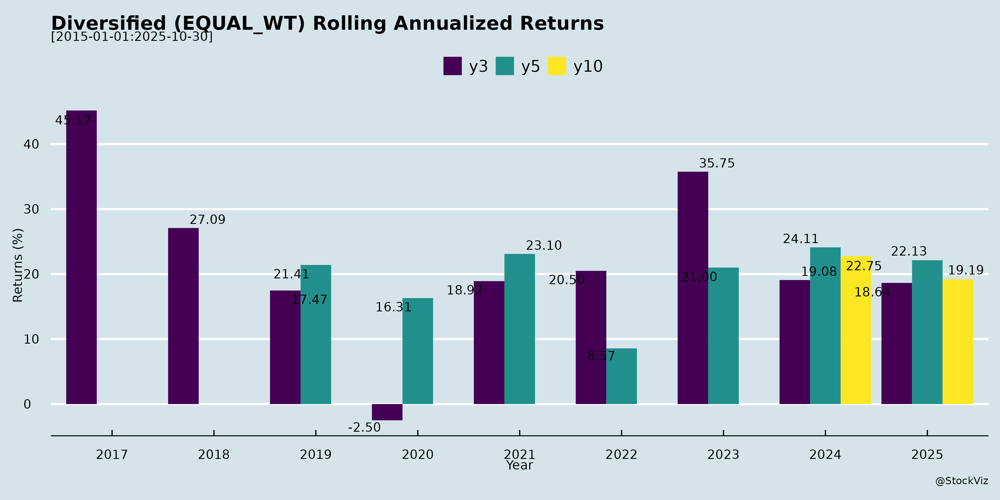
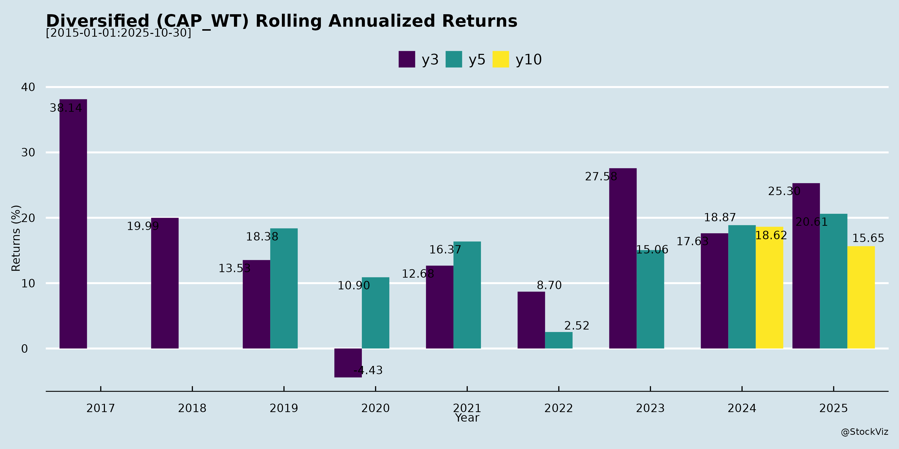

asof: 2025-11-30
Analysis of Indian Diversified Companies (3M India & DCM Shriram)
Using the provided announcements as input, these documents are regulatory disclosures under SEBI (LODR) Reg 30, detailing scheduled analyst/investor interactions. They emphasize no new/unpublished price-sensitive information (UPSI) will be shared, focusing instead on public data (e.g., prior financial results, investor presentations). No direct financial metrics, strategies, or market commentary are included. Below is a derived analysis of headwinds, tailwinds, growth prospects, and key risks for these Indian diversified firms (3M India: conglomerate in industrials/healthcare/safety; DCM Shriram: chemicals/agri/shriram group diversification). Insights are inferred from the context of proactive investor engagement.
Headwinds (Challenges/Negative Factors)
Tailwinds (Positive Factors)
Growth Prospects
Key Risks
| Risk Category | Description | Mitigation from Docs |
|---|---|---|
| Regulatory/Disclosure | Breach of SEBI norms if UPSI inadvertently shared. | Explicit “no UPSI” disclaimer. |
| Event Cancellation | Changes due to “exigencies” (company/investor side). | Advance notice to exchanges. |
| Market/External | Volatility in inputs (e.g., commodities for DCM) or global peers (3M). | Focus on filed public info reduces speculation. |
| Sector-Specific | Cyclical slowdowns in industrials/agri amid monsoons/inflation. | Investor meets signal ongoing dialogue. |
Overall Summary
These announcements portray stable, investor-friendly operations with no major red flags, underscoring tailwinds from institutional access amid a compliant framework. Headwinds are minimal and procedural, while growth prospects remain anchored to prior public disclosures (e.g., unaudited results). Key takeaway: Positive sentiment indicator for Indian diversified names, but substantive insights require earnings transcripts/presentations referenced herein. No material risks elevated; monitor for meeting outcomes or revisions.
Recommendation: Review linked websites (3MIndia.com, DCMShriram.com) for full investor materials. Analysis dated to doc timelines (Sep-Nov 2025).
asof: 2025-12-01
Summary Analysis: Headwinds, Tailwinds, Growth Prospects, and Key Risks for Indian Diversified Companies (Q3FY25)
The provided documents cover unaudited Q3FY25 (quarter and 9M ended Dec 31, 2024) results from seven diversified Indian listed companies spanning industrials (3M India, Balmer Lawrie), conglomerates (Godrej Industries, Dhunseri Ventures), chemicals/agri (DCM Shriram), healthcare (TTK Healthcare), and logistics (Maheshwari Logistics). These firms exhibit multi-segment operations (e.g., healthcare, realty, agri, packaging, treasury). Overall, the portfolio shows resilient YoY growth (avg. revenue +10-20%, PAT +15-50% in most), driven by select segments, but faces sequential softness and cost pressures. Below is a structured analysis.
Headwinds (Key Challenges Observed)
Tailwinds (Positive Factors)
Growth Prospects
Key Risks
| Risk Category | Description | Impacted Cos. | Mitigation |
|---|---|---|---|
| Cyclical/Commodity | Volatility in agri/sugar (DCM, Godrej); input costs (3M, Maheshwari). | All | Hedging, diversification. |
| Regulatory/Compliance | Loan violations (Dhunseri); SOP fines (TTK); NCLT schemes (3M). | Dhunseri, TTK | Repayments, waivers sought. |
| Forex/Debt | High finance costs (Maheshwari 3.5% rev.; Dhunseri forex gains volatile). | Maheshwari, Dhunseri | Debt reduction (Godrej D/E 0.6x). |
| Execution/Competition | Soft demand (3M industrial); logistics margins (Maheshwari). | 3M, Maheshwari | Capex (DCM), subs growth (Godrej). |
| Governance | Related-party loans; director changes. | Dhunseri, TTK | New indep. directors, audits. |
Overall Summary: These diversified firms delivered robust YoY performance (portfolio avg. PAT +30-40%) amid headwinds like costs and sequential dips, buoyed by tailwinds in healthcare/realty. Growth prospects strong (15%+ CAGR via expansions/diversification), but risks center on compliance, costs, and cyclicality. Portfolio resilience from multi-sectors; monitor debt (avg. D/E ~0.5x) and regulatory resolutions. Positive for FY26 if macros stabilize.
asof: 2025-11-30
Analysis for Indian Diversified Sector (Based on Provided Announcements)
The provided documents represent regulatory disclosures (Reg 30, SEBI LODR) from diversified Indian listed companies spanning industrials (3M India, Balmer Lawrie, DCM Shriram), consumer/FMCG/healthcare (Godrej Industries, TTK Healthcare), logistics (Maheshwari Logistics), and ventures/packaging (Dhunseri Ventures). These reflect operational, financial, governance, and compliance updates as of Oct-Nov 2025. Overall, the sector shows resilience amid tax resolutions and steady financials, but with pockets of transition risks. Below is a structured summary of headwinds, tailwinds, growth prospects, and key risks.
Tailwinds (Positive Momentum)
Headwinds (Challenges)
Growth Prospects
Key Risks
Overall Summary: Indian Diversified sector exhibits strong tailwinds from financial stability (TTK’s growth) and resolutions (3M tax), with moderate growth prospects in med-tech/logistics (10-15% sector CAGR potential). Headwinds are transitional (mgmt changes), but key risks center on segment losses and regulatory overhangs. Positive bias; monitor Q3 results for cash flow sustainability. Sector PE likely supported by refunds/ESOPs, but watch forex/inventory in exports.
asof: 2025-11-30
Analysis for Indian Diversified (3M India & DCM Shriram)
The provided documents are routine SEBI LODR Regulation 30 intimation letters disclosing scheduled analyst/investor meetings. They contain no new financial, operational, or strategic disclosures, explicitly stating that discussions will rely on already-public information (e.g., filed results, investor presentations, concall transcripts). No unpublished price-sensitive info will be shared. This limits substantive analysis, but key inferences are summarized below:
Headwinds (Challenges/Negative Factors)
Tailwinds (Positive Factors)
Growth Prospects
Key Risks
Overall Summary: These filings underscore robust IR practices for 3M India and DCM Shriram, fostering tailwinds via institutional access amid neutral headwinds. Growth prospects and risks remain tied to prior public filings (e.g., Q2 FY26 results), with no material updates. Positive for diversified Indian portfolios emphasizing governance, but monitor actual meeting outcomes for deeper insights. No red flags; investor interest is a mild bullish signal.
asof: 2025-12-02
Summary Analysis: Indian Diversified Sector (Based on Provided Corporate Announcements)
The documents cover AGM/postal ballot outcomes, voting results, and Q2/H1 FY26 financials from diversified Indian companies (e.g., 3M India, Godrej Industries, DCM Shriram, Balmer Lawrie, TTK Healthcare, Dhunseri Ventures, Maheshwari Logistics). These span sectors like industrials, chemicals, logistics, healthcare, packaging, and ventures. Overall, the sector exhibits resilience with strong financial momentum, but faces execution and regulatory challenges. Key insights:
Tailwinds (Positive Drivers)
Headwinds (Challenges)
Growth Prospects
Key Risks
Overall Verdict: Strong tailwinds from earnings/dividends offset moderate headwinds; growth anchored in chemicals/acquisitions (high teens prospects), but risks tilt toward execution/segment health. Sector rating: Positive (Buy/Hold) with monitors on RPTs/subsidiary disposals. (Data as of Sep/Oct 2025 filings.)
asof: 2025-11-30
Summary Analysis for Indian Diversified Sector (Chemicals, Agri, Industrial Focus)
Using the provided announcements from Godrej Industries, DCM Shriram Ltd., Balmer Lawrie & Co. Ltd., and Dhunseri Ventures Ltd., the sector exhibits resilience amid expansions and strong chemicals performance, tempered by macro challenges. Key themes include capacity build-ups, sustainability focus, and segment-specific growth.
Tailwinds
Headwinds
Growth Prospects
Key Risks
Overall Outlook: Strong tailwinds from chemicals capex and sustainability position the sector for 10-20%+ growth, offsetting headwinds via diversification. Monitor policy clarity and execution for sustained momentum. (Positive bias; avg. PAT growth ~50-150% YoY in highlighted firms.)
Copyright © 2023 SAS Data Analytics Pvt. Ltd. All rights reserved.